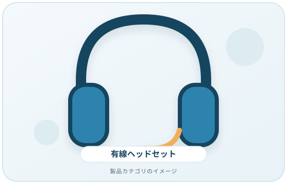
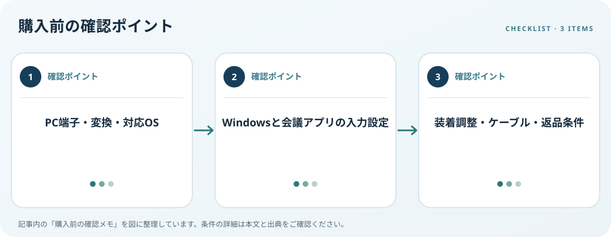

PCの音声端子、マイク入力、会議アプリ、ケーブルと装着条件を確認します。この記事では仕様の確認順を整理します。
画像・ボタンはAmazonアソシエイトリンクです。適格購入により紹介料を得る場合があります。

Amazon.co.jpで「PC ヘッドセット 有線 マイク」を探す ↗

PC側の端子を確認
3.5mm、USB-A、USB-Cなど接続方式をPCの仕様と照合します。ヘッドホン出力とマイク入力が別か複合端子か、変換が必要かを確認します。端子形状が合っても配線方式が異なる場合があるため、PCとヘッドセットの接続図を参照します。
マイク入力をテストする
Windowsのサウンド設定で入力・出力デバイスを選べること、会議アプリにも別の選択項目があることを確認します。接続後はWindowsの案内に沿ってマイクをテストし、アプリの権限やミュートも見ます。マイク搭載だけで音質や雑音抑制を判断しません。
装着とケーブルを想定
イヤーカップ、ヘッドバンド、マイク位置、ケーブル長、音量操作部が使い方に合うか確認します。OSHAはヘッドセットの装着がきつすぎず、位置を保てることを評価項目に挙げています。快適さには個人差があるので返品条件や交換用パッドも見ましょう。
購入前の確認メモ
- PC端子・変換・対応OS
- Windowsと会議アプリの入力設定
- 装着調整・ケーブル・返品条件
この記事は出典の公開情報を購入前の確認項目に整理したもので、特定商品の使用・実測・レビュー・ランキング・価格・在庫の調査は行っていません。購入時には利用機器メーカーの最新仕様をご確認ください。
出典
- Fix sound problems — Microsoft（確認日: 2026-10-10）
- Set up and test microphones — Microsoft（確認日: 2026-10-10）
- Workstation Evaluation — OSHA（確認日: 2026-10-10）